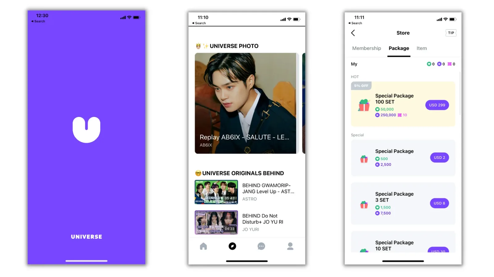
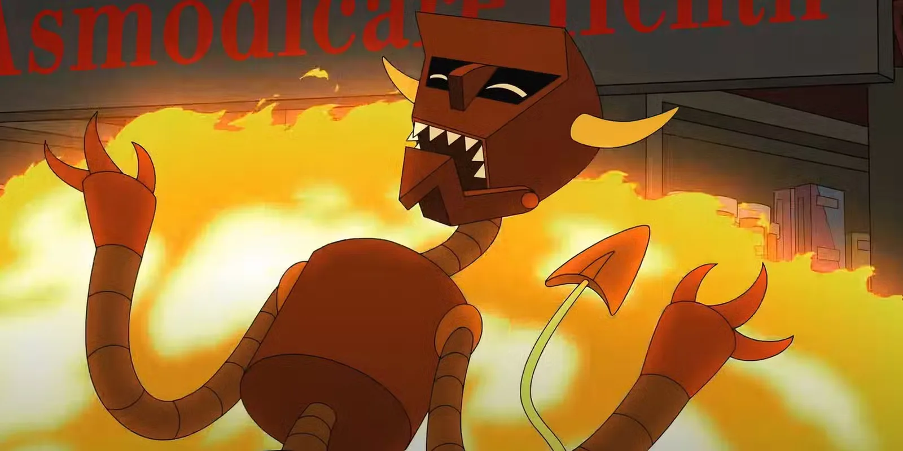

Collateral Damage
Wag1, today I want to share a story about somebody close to me. My niece is 14. And I'm not gonna lie, watching what's been happening to her lately has been genuinely disheartening.

She's smart. Like, actually smart. But she's been completely swallowed by a K-pop rabbit hole, and the fallout in her real life is getting hard to ignore. Failing classes. Getting blanked by her peers at school. Every waking minute living inside a fandom that exists entirely on her phone.
I'm not here to clown her for it. But watching it up close forced me to actually think about why this keeps happening to kids, and what's really going on under the hood.
Because here's the thing. People my age also grew up with the internet. We had MSN, early YouTube, RuneScape, whatever. But that technology wasn't built to hunt us. It was clunky. It had natural stopping points. You had to actively seek it out. What my niece is holding is different. That phone isn't a tool anymore. For her generation, it's the primary environment. And the stuff running on it wasn't designed by accident.

TikTok, the K-pop apps, all of it, these platforms are the product of thousands of data scientists who spent years figuring out exactly how to attack human biology. How to hijack the dopamine system. How to make a 14-year-old feel like leaving the app is a genuine loss.
That's not a side effect. That's the feature.
So when my niece falls down a K-pop hole, the algorithm doesn't just show her one video. It builds her a whole universe. A personalised, frictionless, endless stream of exactly what her brain already said it liked. No effort required. And then she walks into school. And her classmates are talking about whatever they're talking about. And none of it maps onto the world she's been living in the second she gets her hands on a device. So she gets blanked, or worse, mocked. So she goes back to the phone, where the community is, where she's understood, where there's always something new waiting for her.
Real life has become the waiting room.

The K-pop industry specifically has engineered something genuinely sinister. These aren't just fan pages. The bigger agencies run their own dedicated apps where fans can message their favourite manufactured idols directly. Whether the replies are mass-broadcast PR or AI generated at this point, it doesn't really matter, the psychological outcome is the same. They've manufactured the feeling of a real relationship. A famous person, living inside your pocket, sliding into your notifications.
When that's what you're used to, actually talking to a kid at school is bound to feel like a downgrade. The friction is too high. The reward isn't guaranteed. These algorithms have made real human connection feel like a worse product.
And I want to be clear about something. This isn't bad parenting. This isn't a discipline problem. This isn't her fault. My niece is collateral damage in someone's business model.
Some tech bro needed his retention metrics to hit, needed his app to be the thing she couldn't put down, needed her attention more than she needed her own reality. The app is working exactly as intended. That's what makes it so hard to watch. She didn't walk into a trap. The trap was built around her.
If the adults in her life respond by just taking the phone away, it backfires. Every time. Because now the thing she's banned from isn't just a hobby, it's her rebellion. She'll make ghost accounts. She'll hide apps in folders inside folders. She'll become more committed to txhe fandom out of spite, because now it's also the thing she had to fight for. You haven't solved the problem. You've made it load-bearing.
Now, I don't have a perfect answer. Nobody does, especially not straight away. But I know that fighting the interest head-on doesn't work. What seems to actually help is finding the physical version of what the screen is offering, using it as a bridge rather than something to stamp out. If she wants to be an idol, find an actual dance class. Let the thing she loves drag her into a room with real people, real friction, real effort. Rebuild the tolerance for actual life from inside the obsession, not against it. And nobody's asking her to pretend she doesn't love what she loves, but there's a difference between an identity and a personality you broadcast everywhere. Knowing when to keep something close is a skill. One of the most useful ones, actually.
But zoom out for a second. We keep reframing this as a parenting problem, a school problem, a kids-these-days problem. It's not. These platforms were built by people who knew exactly what they were doing. They ran the numbers, they tested the dopamine loops, they knew a 14-year-old's developing brain was the most vulnerable target in the room, and they shipped the product anyway. Because the retention metrics needed to hit. Because there was a funding round coming. Because someone wanted a Maserati.
The damage was always going to land somewhere. And it just landed on her.
Stay Dangerous,
DPD.